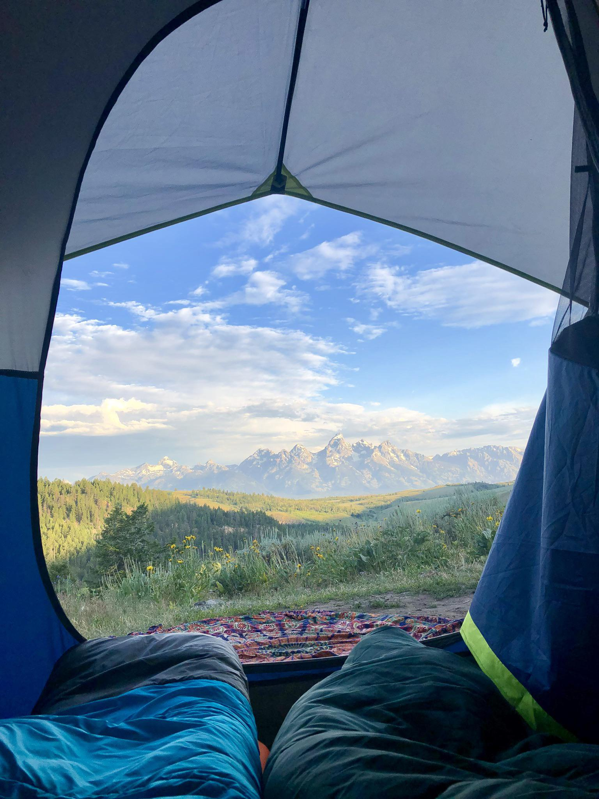

A side effect of the pandemic was an increase in people camping and spending time outdoors. The best way to encourage new outdoorsmen to be successful in camping adventures as well as respectful and conscientious of camping etiquette is to make campsite information readily available! Our goals is to increase the availability of that information in an easy to use and crowd run platform to reach the most people and have the most up to date version of said information.
Campr is an application designed to store campsite related data for users. Our goal is to build a platform for users to track relavent information for each camp site they visit such as the campsite name, location (city, state) GPS coordinates, usage fees if applicable, user ratings etc. This will allow users to compile and navigate the campsites they have visited and plan future trips accordingly.
